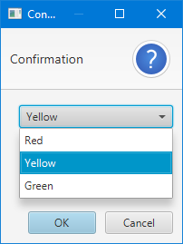

java.lang.Object
javafx.scene.control.Dialog<T>
javafx.scene.control.ChoiceDialog<T>
- Type Parameters:
T- The type of the items to show to the user, and the type that is returned viaDialog.getResult()when the dialog is dismissed.
- All Implemented Interfaces:
EventTarget
A dialog that shows a list of choices to the user, from which they can pick
one item at most.
Example:
List<String> colors = List.of("Red", "Yellow", "Green");
ChoiceDialog choiceDialog = new ChoiceDialog<>("Yellow", colors);
choiceDialog.showAndWait();
- Since:
- JavaFX 8u40
- See Also:
-
Property Summary
PropertiesTypePropertyDescriptionfinal ReadOnlyObjectProperty<T>Returns the property representing the currently selected item in the dialog.Properties declared in class javafx.scene.control.Dialog
contentText, dialogPane, graphic, headerText, height, onCloseRequest, onHidden, onHiding, onShowing, onShown, resizable, resultConverter, result, showing, title, width, x, y -
Constructor Summary
ConstructorsConstructorDescriptionCreates a default, empty instance of ChoiceDialog with no set items and a null default choice.ChoiceDialog(T defaultChoice, Collection<T> choices) Creates a new ChoiceDialog instance with the first argument specifying the default choice that should be shown to the user, and the second argument specifying a collection of all available choices for the user.ChoiceDialog(T defaultChoice, T... choices) Creates a new ChoiceDialog instance with the first argument specifying the default choice that should be shown to the user, and all following arguments considered a varargs array of all available choices for the user. -
Method Summary
Modifier and TypeMethodDescriptionfinal TReturns the default choice that was specified in the constructor.final ObservableList<T>getItems()Returns the list of all items that will be displayed to users.final TReturns the currently selected item in the dialog.final ReadOnlyObjectProperty<T>Returns the property representing the currently selected item in the dialog.final voidsetSelectedItem(T item) Sets the currently selected item in the dialog.Methods declared in class javafx.scene.control.Dialog
buildEventDispatchChain, close, contentTextProperty, dialogPaneProperty, getContentText, getDialogPane, getGraphic, getHeaderText, getHeight, getModality, getOnCloseRequest, getOnHidden, getOnHiding, getOnShowing, getOnShown, getOwner, getResult, getResultConverter, getTitle, getWidth, getX, getY, graphicProperty, headerTextProperty, heightProperty, hide, initModality, initOwner, initStyle, isResizable, isShowing, onCloseRequestProperty, onHiddenProperty, onHidingProperty, onShowingProperty, onShownProperty, resizableProperty, resultConverterProperty, resultProperty, setContentText, setDialogPane, setGraphic, setHeaderText, setHeight, setOnCloseRequest, setOnHidden, setOnHiding, setOnShowing, setOnShown, setResizable, setResult, setResultConverter, setTitle, setWidth, setX, setY, show, showAndWait, showingProperty, titleProperty, widthProperty, xProperty, yProperty
-
Property Details
-
selectedItem
Returns the property representing the currently selected item in the dialog.
-
-
Constructor Details
-
ChoiceDialog
public ChoiceDialog()Creates a default, empty instance of ChoiceDialog with no set items and a null default choice. Users of this constructor will subsequently need to callgetItems()to specify which items to show to the user. -
ChoiceDialog
Creates a new ChoiceDialog instance with the first argument specifying the default choice that should be shown to the user, and all following arguments considered a varargs array of all available choices for the user. It is expected that the defaultChoice be one of the elements in the choices varargs array. If this is not true, then defaultChoice will be set to null and the dialog will show with the initial choice set to the first item in the list of choices.- Parameters:
defaultChoice- The item to display as the pre-selected choice in the dialog. This item must be contained within the choices varargs array.choices- All possible choices to present to the user.
-
ChoiceDialog
Creates a new ChoiceDialog instance with the first argument specifying the default choice that should be shown to the user, and the second argument specifying a collection of all available choices for the user. It is expected that the defaultChoice be one of the elements in the choices collection. If this is not true, then defaultChoice will be set to null and the dialog will show with the initial choice set to the first item in the list of choices.- Parameters:
defaultChoice- The item to display as the pre-selected choice in the dialog. This item must be contained within the choices varargs array.choices- All possible choices to present to the user.
-
-
Method Details
-
getSelectedItem
Returns the currently selected item in the dialog.- Returns:
- the currently selected item
-
selectedItemProperty
Returns the property representing the currently selected item in the dialog.- Returns:
- the currently selected item property
- See Also:
-
setSelectedItem
Sets the currently selected item in the dialog.- Parameters:
item- The item to select in the dialog.
-
getItems
Returns the list of all items that will be displayed to users. This list can be modified by the developer to add, remove, or reorder the items to present to the user.- Returns:
- the list of all items that will be displayed to users
-
getDefaultChoice
Returns the default choice that was specified in the constructor.- Returns:
- the default choice
-